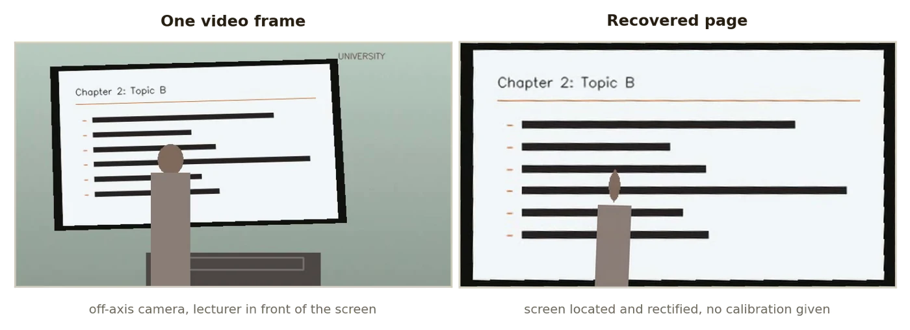

Development · 2026
Lecture PDF
A recording of a lecture becomes a PDF of its slides, handwriting included.
SWVisionPython

What it does
- Turns a recording of a lecture into a PDF of the slides, including what the lecturer wrote on them.
- Finds the projected screen or whiteboard by itself, so there is no per-recording calibration: keystoned off-axis cameras, screen captures, letterboxed video and recordings whose framing changes part-way are handled.
- Four ink modes decide what a page is: clean, one page per slide at its least annotated; final, at its most annotated; epochs, one page per write-and-wipe cycle; and all.
- Per video it writes the handout PDF, a contact sheet for a quick check, the page images and a JSON extraction report.
How it works
- A screen is the part of the frame that changes but does not move. A wall does neither, a lectern does not change, and the lecturer never stops moving; those three facts isolate the screen, which is then snapped to its physical border and rectified.
- A slide change is accepted only if the frame still differs some seconds later, and it is measured as how much of the previous slide survives, so annotation does not count as a new slide.
- Ink is whatever differs from the slide when it first appeared, so any pen color, chalk or marker behaves the same; a mark must persist to count, bodies are filtered from the ink mask, and whatever the lecturer occludes is unknown rather than erased.
- Pages are median composites of nearby frames, which removes the lecturer and recovers what they stood in front of. Four bounded passes over the video, so multi-hour recordings are fine.
Facts
- Year
- 2026
- Status
- Public, release v2.0.0
- Stack
- Python, OpenCV, NumPy, Pillow; Windows launchers that build their own environment